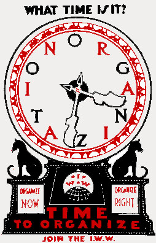

Submitted on Wed, 09/30/2015 - 9:04pm
By Immanuel Ness - CounterPunch, September 22, 2015
Disclaimer: The views expressed here are not the official position of the IWW and do not necessarily represent the views of anyone but the author’s.
By embracing collective bargaining through the National Labor Relations Act (NLRA) of 1935, or Wagner Act, organized labor deprived workers of their capacity to contest private and state power. This compromise closed out any possibility of building a mass-based labor movement for decades. Rather than advancing the interests of workers, the NLRA circumscribed workers’ aspirations for democratic syndicalist and autonomist unions.
IWW: Alternative to Contract Unionism
In examining the long-term failure of organized labor, we must first note the alternative, organic, autonomous workers’ movement embodied in particular by unions affiliated with the Industrial Workers of the World (IWW) in the early 20th century. From its inception in 1905 until the 1920’s, the IWW represented a significant alternative to contract unionism. The IWW stood for the solidarity of all workers and it was fiercely opposed for that reason — by capital, by reformists such as Daniel DeLeon of the Socialist Labor Party and by the American Federation of Labor (AFL).[i] The IWW engaged in a genuine form of democracy and a mass industrial organizing model ultimately adopted by the AFL and the Congress of Industrial Organization (CIO), which both utilized for very different purposes.[ii]
The IWW employed sabotage, direct action and strikes through the equivalent of workers’ councils in both the community and at the point of production, while disavowing the legitimacy of the state and recognizing that any agreement with business must be temporary. The Wobblies vigorously negotiated with employers but were never deluded that agreements would bring labor peace.
That the solidarity of all workers was not just talk for the IWW is evidenced by their organization of Blacks, immigrant workers from Mexico and Southeast Asia, and women in, for example, the Bread and Roses Strike. Historian Peter Cole has richly demonstrated that the IWW embraced multiracial unionism, perhaps most notably in Philadelphia’s Maritime Workers Local 8, where Black workers maintained a majority.iii
The IWW achieved major gains for U.S. workers into the 1930s while (and because) it emphasized solidarity and workers’ control. When AFL and CIO unions expanded dramatically as a result of upheaval that began in the early 1930’s, they, by contrast, mostly failed to stimulate enthusiasm among workers. Riding the massive wave of sit-down strikes to positions of power, leaders of insurgent unions contributed greatly to sublimating the continuation of such militancy by throwing their support behind modest and incomplete New Deal reforms that ultimately weakened the capacity of workers to confront capital directly. In the area of labor relations, the NLRA was the fulcrum.
Many workers who participated in the sit-down strikes in mass production industries considered unionization synonymous with control over the enterprise, as was recognized immediately by capital. Given the breadth and ongoing militancy of the labor upheaval, the most astute corporate leaders soon expressed willingness to yield select rights provided that employer absolutism in the workplace was maintained. The NLRA proved to be the mechanism for doing so and responsible labor leaders proved willing junior partners in quelling worker militancy. For approximately a year after the wave of sit-down strikes, many workers were surprised to learn that their unions, as sanctioned by the NLRA, set up a framework that restricted their autonomy.
In his account of the Flint sit-down strikes, Sidney Fine wrote of how UAW members “were reluctant to accept the customary discipline exercised by management” and “ran wild in many plants for months.” Union committeemen aggressively pressed the grievances of union members upon oftentimes unyielding foremen, and as a UAW member later conceded, “Every time a dispute came up the fellows would have a tendency to sit down and just stop working.”iv
 Date: Sunday, October 18th 2015
Date: Sunday, October 18th 2015  This past Friday, September 25, the National Labor Relations Board issued a new ruling regarding the struggle between the IWW Sisters’ Camelot Canvass Union and their former bosses at Sisters’ Camelot.
This past Friday, September 25, the National Labor Relations Board issued a new ruling regarding the struggle between the IWW Sisters’ Camelot Canvass Union and their former bosses at Sisters’ Camelot. This Presidential campaign has become even more of a media spectacle than the last two were, which in and of itself proves our electoral system is broken because the voters treat governance like professional wrestling. The Republican field is so close to a Vince McMahon Slam-O-Rama match that we do not even need to come up with silly stage names for these doofuses.
This Presidential campaign has become even more of a media spectacle than the last two were, which in and of itself proves our electoral system is broken because the voters treat governance like professional wrestling. The Republican field is so close to a Vince McMahon Slam-O-Rama match that we do not even need to come up with silly stage names for these doofuses.